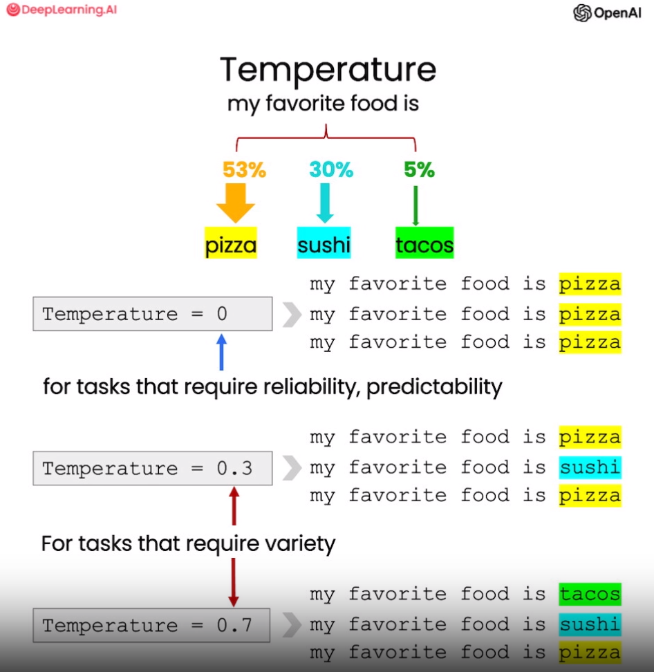

第七章 文本扩展¶
文本扩展是大语言模型的一个重要应用方向，它可以输入简短文本，生成更加丰富的长文。这为创作提供了强大支持，但也可能被滥用。因此开发者在使用时，必须谨记社会责任，避免生成有害内容。
在本章中,我们将学习基于 OpenAI API 实现一个客户邮件自动生成的示例，用于根据客户反馈优化客服邮件。这里还会介绍“温度”（temperature）这一超参数，它可以控制文本生成的多样性。
需要注意，扩展功能只应用来辅助人类创作，而非大规模自动生成内容。开发者应审慎使用，避免产生负面影响。只有以负责任和有益的方式应用语言模型，才能发挥其最大价值。相信践行社会责任的开发者可以利用语言模型的扩展功能，开发出真正造福人类的创新应用。
一、定制客户邮件¶
在这个客户邮件自动生成的示例中，我们将根据客户的评价和其中的情感倾向，使用大语言模型针对性地生成回复邮件。
具体来说，我们先输入客户的评论文本和对应的情感分析结果(正面或者负面)。然后构造一个 Prompt，要求大语言模型基于这些信息来生成一封定制的回复电子邮件。
下面先给出一个实例，包括一条客户评价和这个评价表达的情感。这为后续的语言模型生成回复邮件提供了关键输入信息。通过输入客户反馈的具体内容和情感态度，语言模型可以生成针对这个特定客户、考虑其具体情感因素的个性化回复。这种针对个体客户特点的邮件生成方式，将大大提升客户满意度。
# 我们可以在推理那章学习到如何对一个评论判断其情感倾向
sentiment = "消极的"
# 一个产品的评价
review = f"""
他们在11月份的季节性销售期间以约49美元的价格出售17件套装，折扣约为一半。\
但由于某些原因（可能是价格欺诈），到了12月第二周，同样的套装价格全都涨到了70美元到89美元不等。\
11件套装的价格也上涨了大约10美元左右。\
虽然外观看起来还可以，但基座上锁定刀片的部分看起来不如几年前的早期版本那么好。\
不过我打算非常温柔地使用它，例如，\
我会先在搅拌机中将像豆子、冰、米饭等硬物研磨，然后再制成所需的份量，\
切换到打蛋器制作更细的面粉，或者在制作冰沙时先使用交叉切割刀片，然后使用平面刀片制作更细/不粘的效果。\
制作冰沙时，特别提示：\
将水果和蔬菜切碎并冷冻（如果使用菠菜，则轻轻煮软菠菜，然后冷冻直到使用；\
如果制作果酱，则使用小到中号的食品处理器），这样可以避免在制作冰沙时添加太多冰块。\
大约一年后，电机发出奇怪的噪音，我打电话给客服，但保修已经过期了，所以我不得不再买一个。\
总的来说，这些产品的总体质量已经下降，因此它们依靠品牌认可和消费者忠诚度来维持销售。\
货物在两天内到达。
"""
在这个例子中，我们已经利用前面章节学到的方法，从客户评价中提取出其表达的情感倾向。这里是一条关于搅拌机的评论。现在我们要基于这条评论中的情感倾向，使用大语言模型自动生成一封回复邮件。
以下述 Prompt 为例：首先明确大语言模型的身份是客户服务 AI 助手；它任务是为客户发送电子邮件回复；然后在三个反引号间给出具体的客户评论；最后要求语言模型根据这条反馈邮件生成一封回复，以感谢客户的评价。
from tool import get_completion
prompt = f"""
你是一位客户服务的AI助手。
你的任务是给一位重要客户发送邮件回复。
根据客户通过“```”分隔的评价，生成回复以感谢客户的评价。提醒模型使用评价中的具体细节
用简明而专业的语气写信。
作为“AI客户代理”签署电子邮件。
客户评论：
```{review}```
评论情感：{sentiment}
"""
response = get_completion(prompt)
print(response)
尊敬的客户，
非常感谢您对我们产品的评价。我们非常抱歉您在购买过程中遇到了价格上涨的问题。我们一直致力于为客户提供最优惠的价格，但由于市场波动，价格可能会有所变化。我们深表歉意，如果您需要任何帮助，请随时联系我们的客户服务团队。
我们非常感谢您对我们产品的详细评价和使用技巧。我们将会把您的反馈传达给我们的产品团队，以便改进我们的产品质量和性能。
再次感谢您对我们的支持和反馈。如果您需要任何帮助或有任何疑问，请随时联系我们的客户服务团队。
祝您一切顺利！
AI客户代理
通过这个Prompt,我们将具体的客户评论内容和需要表达的客服助手语气与要生成的回复邮件链接起来。语言模型可以在充分理解客户反馈的基础上，自动撰写恰当的回复。
这种依据具体客户评价个性化回复的方法，将大大提升客户体验和满意度。
二、引入温度系数¶
大语言模型中的 “温度”(temperature) 参数可以控制生成文本的随机性和多样性。temperature 的值越大，语言模型输出的多样性越大；temperature 的值越小，输出越倾向高概率的文本。
举个例子，在某一上下文中，语言模型可能认为“比萨”是接下来最可能的词，其次是“寿司”和“塔可”。若 temperature 为0，则每次都会生成“比萨”；而当 temperature 越接近 1 时，生成结果是“寿司”或“塔可”的可能性越大，使文本更加多样。

一般来说，如果需要可预测、可靠的输出，则将 temperature 设置为0，在所有课程中，我们一直设置温度为零；如果需要更具创造性的多样文本，那么适当提高 temperature 则很有帮助。调整这个参数可以灵活地控制语言模型的输出特性。
在下面例子中，针对同一段来信，我们提醒语言模型使用用户来信中的详细信息，并设置一个较高的 temperature ，运行两次，比较他们的结果有何差异。
# 第一次运行
prompt = f"""
你是一名客户服务的AI助手。
你的任务是给一位重要的客户发送邮件回复。
根据通过“```”分隔的客户电子邮件生成回复，以感谢客户的评价。
如果情感是积极的或中性的，感谢他们的评价。
如果情感是消极的，道歉并建议他们联系客户服务。
请确保使用评论中的具体细节。
以简明和专业的语气写信。
以“AI客户代理”的名义签署电子邮件。
客户评价：```{review}```
评论情感：{sentiment}
"""
response = get_completion(prompt, temperature=0.7)
print(response)
尊敬的客户，
感谢您对我们产品的评价。我们非常重视您的意见，并对您在使用过程中遇到的问题表示诚挚的道歉。
我们对价格的变动深感抱歉。根据您的描述，我们了解到在12月第二周，套装的价格出现了不同程度的上涨。我们会进一步调查此事，并确保我们的定价策略更加透明和一致。
您提到了产品部分的质量下降，特别是锁定刀片的部分。我们对此感到非常遗憾，并将反馈给我们的研发团队，以便改进产品的设计和质量控制。我们始终致力于提供优质的产品，以满足客户的需求和期望。
此外，我们将非常感谢您分享了您对产品的使用方式和相关提示。您的经验和建议对我们来说非常宝贵，我们将考虑将其纳入我们的产品改进计划中。
如果您需要进一步帮助或有其他问题，请随时联系我们的客户服务团队。我们将竭诚为您提供支持和解决方案。
再次感谢您的反馈和对我们的支持。我们将继续努力提供更好的产品和服务。
祝您一切顺利！
AI客户代理
第二次运行输出结果会发生变化：
# 第二次运行
prompt = f"""
你是一名客户服务的AI助手。
你的任务是给一位重要的客户发送邮件回复。
根据通过“```”分隔的客户电子邮件生成回复，以感谢客户的评价。
如果情感是积极的或中性的，感谢他们的评价。
如果情感是消极的，道歉并建议他们联系客户服务。
请确保使用评论中的具体细节。
以简明和专业的语气写信。
以“AI客户代理”的名义签署电子邮件。
客户评价：```{review}```
评论情感：{sentiment}
"""
response = get_completion(prompt, temperature=0.7)
print(response)
亲爱的客户，
非常感谢您对我们产品的评价和反馈。我们非常重视您的意见，并感谢您对我们产品的支持。
首先，我们对价格的变动感到非常抱歉给您带来了困扰。我们会认真考虑您提到的情况，并采取适当的措施来改进我们的价格策略，以避免类似情况再次发生。
关于产品质量的问题，我们深感抱歉。我们一直致力于提供高质量的产品，并且我们会将您提到的问题反馈给我们的研发团队，以便改进产品的设计和制造过程。
如果您需要更多关于产品保修的信息，或者对我们的其他产品有任何疑问或需求，请随时联系我们的客户服务团队。我们将竭诚为您提供帮助和支持。
再次感谢您对我们产品的评价和支持。我们将继续努力提供优质的产品和出色的客户服务，以满足您的需求。
祝您度过愉快的一天！
AI客户代理
温度（temperature）参数可以控制语言模型生成文本的随机性。温度为0时，每次使用同样的 Prompt，得到的结果总是一致的。而在上面的样例中，当温度设为0.7时，则每次执行都会生成不同的文本。
所以，这次的结果与之前得到的邮件就不太一样了。再次执行同样的 Prompt,邮件内容还会有变化。因此。我建议读者朋友们可以自己尝试不同的 temperature ，来观察输出的变化。总体来说，temperature 越高，语言模型的文本生成就越具有随机性。可以想象，高温度下，语言模型就像心绪更加活跃，但也可能更有创造力。
适当调节这个超参数,可以让语言模型的生成更富有多样性，也更能意外惊喜。希望这些经验可以帮助你在不同场景中找到最合适的温度设置。
三、英文版¶
1.1 定制客户邮件
# given the sentiment from the lesson on "inferring",
# and the original customer message, customize the email
sentiment = "negative"
# review for a blender
review = f"""
So, they still had the 17 piece system on seasonal \
sale for around $49 in the month of November, about \
half off, but for some reason (call it price gouging) \
around the second week of December the prices all went \
up to about anywhere from between $70-$89 for the same \
system. And the 11 piece system went up around $10 or \
so in price also from the earlier sale price of $29. \
So it looks okay, but if you look at the base, the part \
where the blade locks into place doesn’t look as good \
as in previous editions from a few years ago, but I \
plan to be very gentle with it (example, I crush \
very hard items like beans, ice, rice, etc. in the \
blender first then pulverize them in the serving size \
I want in the blender then switch to the whipping \
blade for a finer flour, and use the cross cutting blade \
first when making smoothies, then use the flat blade \
if I need them finer/less pulpy). Special tip when making \
smoothies, finely cut and freeze the fruits and \
vegetables (if using spinach-lightly stew soften the \
spinach then freeze until ready for use-and if making \
sorbet, use a small to medium sized food processor) \
that you plan to use that way you can avoid adding so \
much ice if at all-when making your smoothie. \
After about a year, the motor was making a funny noise. \
I called customer service but the warranty expired \
already, so I had to buy another one. FYI: The overall \
quality has gone done in these types of products, so \
they are kind of counting on brand recognition and \
consumer loyalty to maintain sales. Got it in about \
two days.
"""
prompt = f"""
You are a customer service AI assistant.
Your task is to send an email reply to a valued customer.
Given the customer email delimited by ```, \
Generate a reply to thank the customer for their review.
If the sentiment is positive or neutral, thank them for \
their review.
If the sentiment is negative, apologize and suggest that \
they can reach out to customer service.
Make sure to use specific details from the review.
Write in a concise and professional tone.
Sign the email as `AI customer agent`.
Customer review: ```{review}```
Review sentiment: {sentiment}
"""
response = get_completion(prompt)
print(response)
Dear Valued Customer,
Thank you for taking the time to share your review with us. We appreciate your feedback and apologize for any inconvenience you may have experienced.
We are sorry to hear about the price increase you noticed in December. We strive to provide competitive pricing for our products, and we understand your frustration. If you have any further concerns regarding pricing or any other issues, we encourage you to reach out to our customer service team. They will be more than happy to assist you.
We also appreciate your feedback regarding the base of the system. We continuously work to improve the quality of our products, and your comments will be taken into consideration for future enhancements.
We apologize for any inconvenience caused by the motor issue you encountered. Our customer service team is always available to assist with any warranty-related concerns. We understand that the warranty had expired, but we would still like to address this matter further. Please feel free to contact our customer service team, and they will do their best to assist you.
Thank you once again for your review. We value your feedback and appreciate your loyalty to our brand. If you have any further questions or concerns, please do not hesitate to contact us.
Best regards,
AI customer agent
2.1 引入温度系数
prompt = f"""
You are a customer service AI assistant.
Your task is to send an email reply to a valued customer.
Given the customer email delimited by ```, \
Generate a reply to thank the customer for their review.
If the sentiment is positive or neutral, thank them for \
their review.
If the sentiment is negative, apologize and suggest that \
they can reach out to customer service.
Make sure to use specific details from the review.
Write in a concise and professional tone.
Sign the email as `AI customer agent`.
Customer review: ```{review}```
Review sentiment: {sentiment}
"""
response = get_completion(prompt, temperature=0.7)
print(response)
Dear Valued Customer,
Thank you for taking the time to share your feedback with us. We sincerely apologize for any inconvenience you experienced with our pricing and the quality of our product.
We understand your frustration regarding the price increase of our 17 piece system in December. We assure you that price gouging is not our intention, and we apologize for any confusion caused. We appreciate your loyalty and we value your feedback, as it helps us to improve our products and services.
Regarding the issue with the blade lock and the decrease in overall quality, we apologize for any disappointment caused. We strive to provide our customers with the best possible products, and we regret that we did not meet your expectations. We will make sure to take your feedback into consideration for future improvements.
If you require further assistance or if you have any other concerns, please do not hesitate to reach out to our customer service team. They will be more than happy to assist you in resolving any issues you may have.
Once again, we apologize for any inconvenience caused and we appreciate your understanding. We value your business and we hope to have the opportunity to serve you better in the future.
Best regards,
AI customer agent